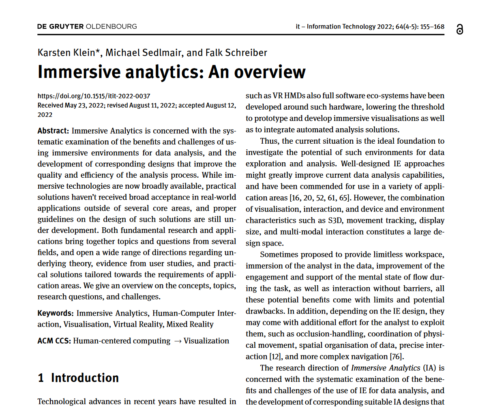

Immersive Analytics: An Overview

Authors. Karsten Klein, Michael Sedlmair, Falk Schreiber
Venue. it - Information Technology (2022)
Abstract. Immersive Analytics is concerned with the systematic examination of the benefits and challenges of using immersive environments for data analysis, and the development of corresponding designs that improve the quality and efficiency of the analysis process. While immersive technologies are now broadly available, practical solutions haven’t received broad acceptance in real-world applications outside of several core areas, and proper guidelines on the design of such solutions are still under development. Both fundamental research and applications bring together topics and questions from several fields, and open a wide range of directions regarding underlying theory, evidence from user studies, and practical solutions tailored towards the requirements of application areas. We give an overview on the concepts, topics, research questions, and challenges.